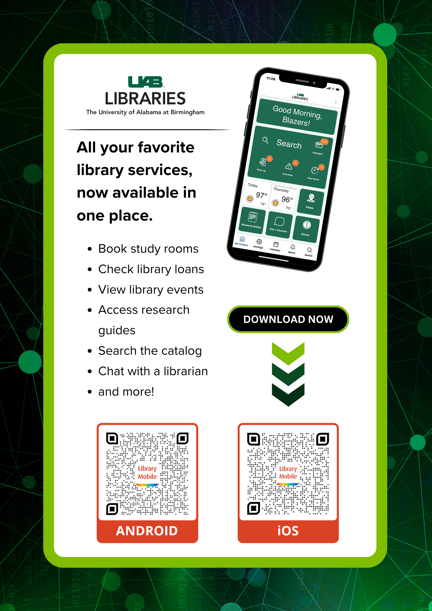

Projects
For full presentations and guides, please contact me.
University of Alabama at Birmingham Libraries

To visit the live guide, use the following URL: https://guides.library.uab.edu/electronicresources
Florida State University Libraries


E-Collections in Alma & Primo

E-Collections in Alma & Primo was a presentation given during UAB TechTalks. It was meant to inform library workers how electronic resources are managed in Ex Libris Alma and Primo VE for library patrons.
UAB Library Mobile App Demo

This presentation was meant to demonstrate the new UAB Library Mobile Application to internal staff. I was the Team Lead for this project to configure and implement the app for the UAB community.
E-Resource Usage Statistics During Covid-19

E-Resources Usage Statistics During Covid-19 was presented in front of the Scholarly Support Network at FSU Libraries. The occasion was meant to inform library faculty and staff why usage statistics are important and how they were affected by the COVID-19 pandemic during 2020.
Reviews
Text.
App Configuration & Implementation

In order to provide Single Sign-On (SSO), SAML authentication was configured for the app. The library's information systems, Alma & Primo VE, were also implemented into the app so patron's can search the catatlog and view their library account details. Content pages (static content) were also created to display pertinent information to library users.
Usability Testing

Before the Library Mobile app was distributed and promoted to the public, internal usability testing was done in order to test ease of use of the app and to identify any areas of improvement. Participants were given access to the app then asked to follow prompts. Once testing was completed, participants filled out a form rating the app and the areas they thought were difficult or confusing.
Marketing
Marketing for the app was done by placing flyers around the physical library locations as well as digital signage. We also promoted the app through UAB's weekly newsletter.